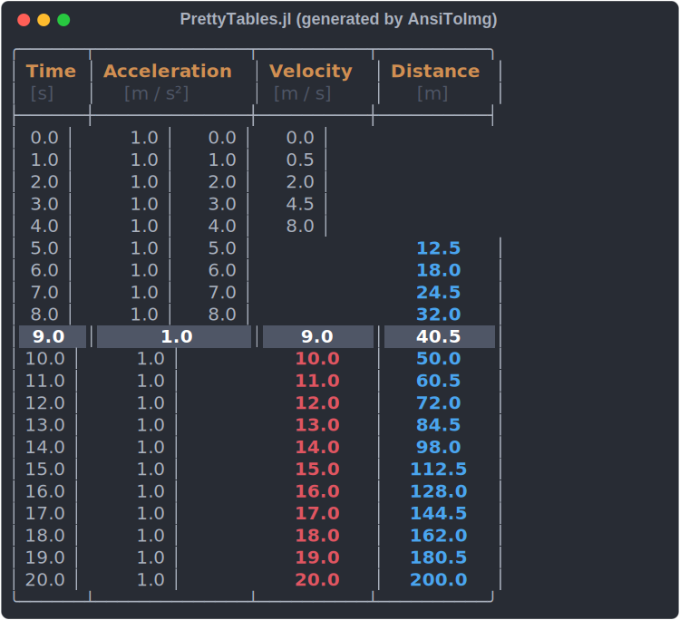

PrettyTables.jl
The Julia package PrettyTables.jl has the purpose to print data in matrices in a human-readable format. It was inspired in the functionality provided by ASCII Table Generator.
julia> using PrettyTablesjulia> t = 0:1:200:1:20julia> data = hcat(t, ones(length(t) ), t, 0.5.*t.^2);julia> header = ( ["Time", "Acceleration", "Velocity", "Distance"], [ "[s]", "[m / s²]", "[m / s]", "[m]"] )(["Time", "Acceleration", "Velocity", "Distance"], ["[s]", "[m / s²]", "[m / s]", "[m]"])julia> hl_p = Highlighter( (data, i, j) -> (j == 4) && (data[i, j] > 9), crayon"blue bold" );julia> hl_v = Highlighter( (data, i, j) -> (j == 3) && (data[i, j] > 9), crayon"red bold" );julia> hl_10 = Highlighter( (data, i, j) -> (i == 10), crayon"fg:white bold bg:dark_gray" );
julia> pretty_table(
data;
formatters = ft_printf("%5.2f", 2:4),
header = header,
header_crayon = crayon"yellow bold",
highlighters = (hl_10, hl_p, hl_v),
tf = tf_unicode_rounded
)
Installation
julia> using Pkg
julia> Pkg.add("PrettyTables")